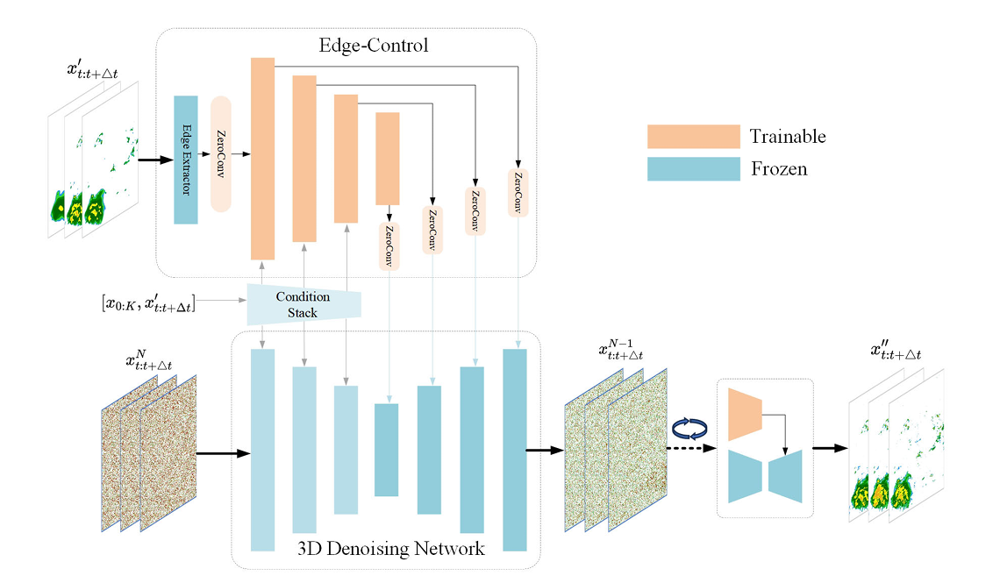
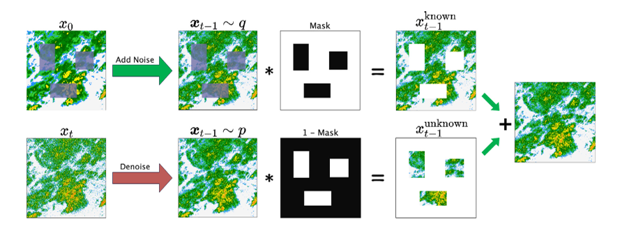
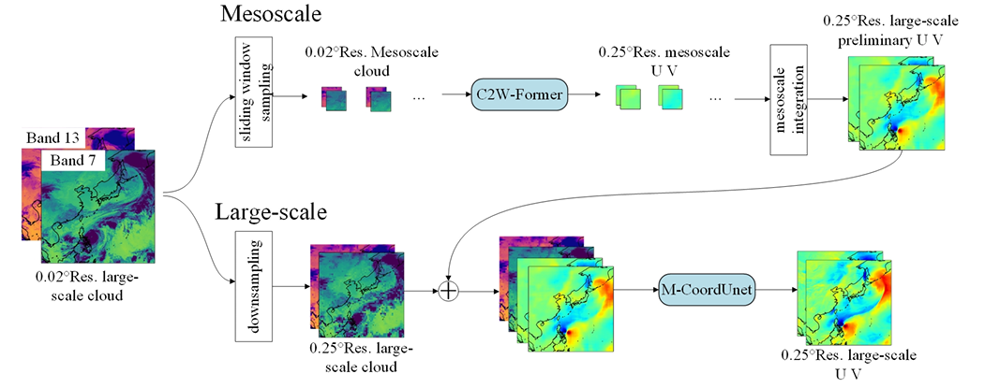
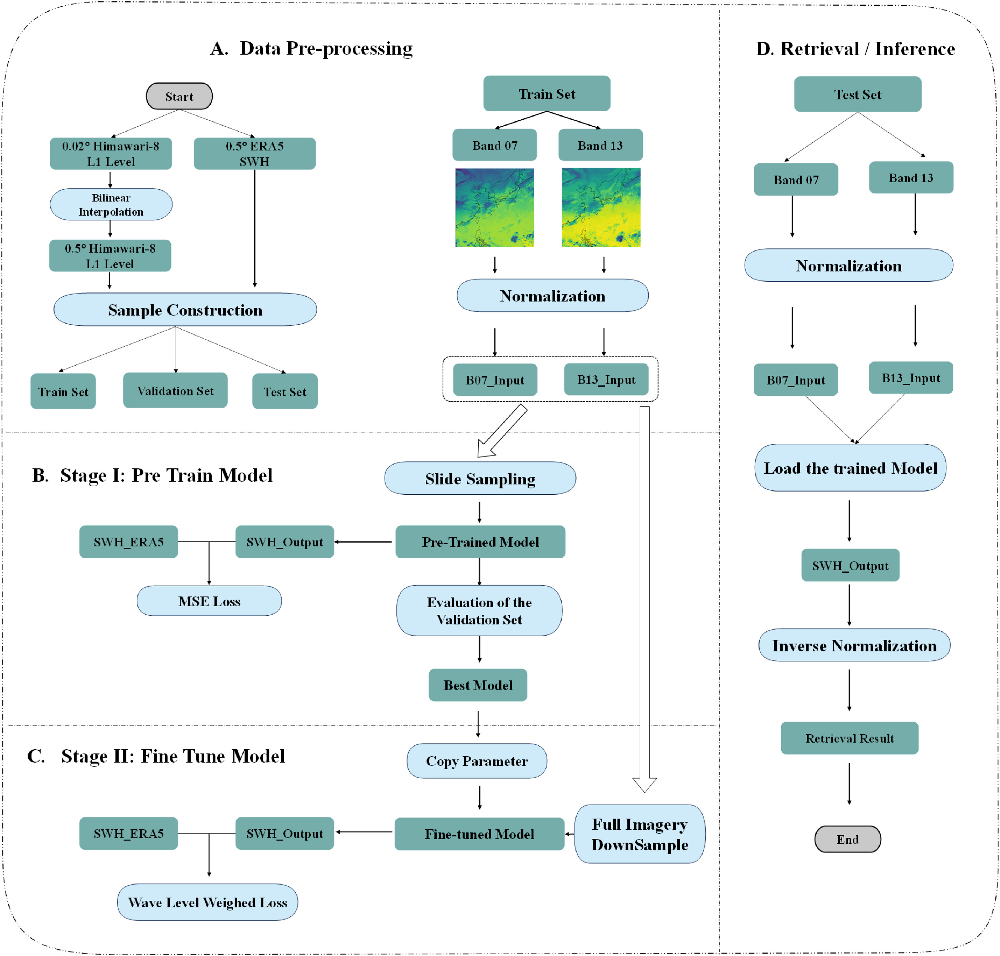
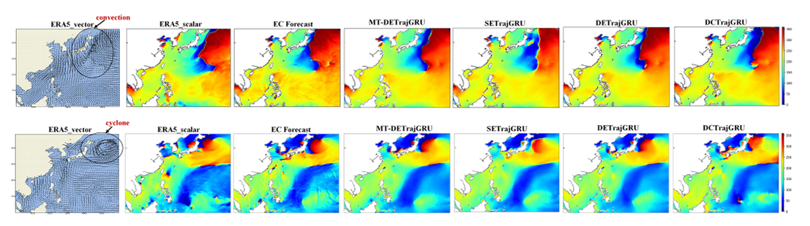

关于我们
AIMM@OUC（人工智能海洋与气象实验室）隶属于中国海洋大学，聚焦海洋与大气科学的前沿交叉领域。实验室致力于将深度学习、大语言模型等人工智能技术与传统海洋气象学深度融合，打造从机理认知到智能预报的完整研究闭环。
我们围绕海洋智能预报、雷达强对流临近预警、极端天气小样本学习等核心方向开展创新研究，旨在应对极端天气气候事件、保障海洋安全、深化地球系统科学研究，为国家海洋强国战略提供坚实的科学支撑与技术解决方案。

Artificial Intelligence for Marine & Meteorology @ Ocean University of China
本实验室聚焦人工智能与海洋大气的前沿交叉领域，致力于将深度学习、大语言模型等人工智能技术与传统海洋气象学深度融合。我们围绕海洋智能预报、雷达强对流预警、极端天气小样本学习等核心方向开展研究，旨在构建从机理认知到智能预报的完整研究闭环，为海洋安全保障和气候变化应对提供科学支撑。
AIMM@OUC（人工智能海洋与气象实验室）隶属于中国海洋大学，聚焦海洋与大气科学的前沿交叉领域。实验室致力于将深度学习、大语言模型等人工智能技术与传统海洋气象学深度融合，打造从机理认知到智能预报的完整研究闭环。
我们围绕海洋智能预报、雷达强对流临近预警、极端天气小样本学习等核心方向开展创新研究，旨在应对极端天气气候事件、保障海洋安全、深化地球系统科学研究，为国家海洋强国战略提供坚实的科学支撑与技术解决方案。
聚焦于海洋与大气交互界面的核心动力过程，关注风如何驱动海浪的生成与发展——即风浪生成、非线性相互作用及涌浪传播的物理机制，研究在台风、温带气旋等极端天气系统影响下，海洋动力环境的剧烈响应。
致力于将前沿人工智能技术与雷达气象学深度融合，核心研究方向为强对流临近预报。利用大语言模型（LLM）及相关架构处理海量时空数据，挖掘强对流演化的复杂模式。
针对极端天气样本稀缺的痛点，专项研发基于小模型的小样本学习方法，实现高效、精准的极少样本预报。开展合成雷达反演研究，通过AI算法弥补观测盲区，构建更智能的极端天气预警系统。
教授 / 硕士生导师
中国海洋大学信息科学与工程学部教授。主要从事人工智能气象预报等交叉领域研究，在 Remote Sensing、IEEE 等国际顶级期刊发表多篇高水平论文，主持多项国家级科研项目。
教授 / 博士生导师 · 学部部长
国家高层次人才，现任信息科学与工程学部部长。国际上最早采用深度学习预测海表温度的学者之一，主持研发国内首个大型坐底式水下激光扫描三维成像仪，获山东省自然科学二等奖。
2023级硕士
2023级硕士
2023级硕士
2023级硕士
2023级硕士
2023级硕士
2023级硕士
2024级硕士
2024级硕士
2024级硕士
2024级硕士
2024级硕士
2025级硕士
2025级硕士
2025级硕士
2025级硕士
| 年级 | 姓名 | 在校成果 | 首次就业 |
|---|---|---|---|
| 2021 | 罗沐奇 | - | 山东省移动创新研究院 |
| 2021 | 吴亚鹏 | RS | 北京百度网讯科技有限公司 |
| 2021 | 杨晓 | - | 山东电工电气集团数字科技有限公司 |
| 2021 | 文友奇 | - | 中联重科有限公司 |
| 2022 | 郜述鑫 | - | 山东省农村信用联合社 |
| 2022 | 范昆昆 | RS | 山东省农村信用联合社 |
| 2022 | 张新宇 | ISPRS、JSTARS | 青岛市农业农村局 |
| 2022 | 王艺豪 | - | 广东省河源市大数据局 |
| 2022 | 刘杰 | - | 广东省惠州城市职业学院 |

本文提出一种面向强对流风暴临近预报的两阶段框架。第一阶段，多尺度卷积循环网络（MS-CRN）同时捕捉局部细节和全局大气模式；第二阶段，边缘引导扩散模型（EGD）对预测结果进行精细化，保留风暴边界并消除模糊伪影。实验表明，MS-CRN的平均CSI达0.3305，HSS达0.4358，分别超越基线3.9%和4.3%，EGD在高反射率阈值下的粗尺度CSI-pool较先前生成式方法提升13.9%。
查看论文 →
本文提出一种综合修复扩散模型（CIDM），专门解决气象雷达扫描区域数据缺失问题。该方法将领域知识融入生成式模型，以已知区域的先验信息引导缺失信息的生成，无需复杂数据预处理。在NOAA的MRMS数据集上，针对各类缺失场景（尤其是极端大面积缺失），修复精度较现有方法提升5%至35%，充分展示了生成模型在遥感精细化数据生成方面的潜力。
查看论文 →
本文提出多尺度融合反演（MFR）方法，利用静止卫星实现大范围实时风场反演。中尺度采用"云到风"Transformer模型提取精细风场特征，大尺度采用多编码器坐标U-Net融合多尺度信息。基于Himawari-8卫星一级数据（0–60°N、100–160°E，分辨率0.25°）的验证表明，单GPU秒级完成反演，风速平均绝对误差0.97 m/s，风向平均绝对误差23.31°，优于CFOSAT Level 2B风场产品，为大尺度格点预报模式提供初始场的新途径。
查看论文 →
本研究开发了基于地球静止卫星的高精度有效波高（SWH）快速反演方法。CoordConvUnet模型融合地理坐标信息与Himawari-8卫星云图多尺度特征，结合预训练与微调策略显著提升反演精度与稳定性。针对西北太平洋（0–60°N、100–160°E）0.5°分辨率波场，测试站点SWH的平均绝对误差为0.341 m，均方根误差为0.491 m，优于HY-2B雷达高度计C波段产品，且连续覆盖能力显著优于极轨卫星数据。
查看论文 →
本研究提出MT-DETrajGRU模型，利用改进的"双编码器预报器"架构对ECMWF风场预报进行实时偏差订正。通过多任务学习损失函数，单一模型同时订正风速和风向，无需分别训练。在西北太平洋（2020年12月至2021年11月）的四季10天滚动订正实验中，风速和风向偏差分别降低8–11%和9–14%，且在正常天气与台风条件下性能相当，充分验证了模型的鲁棒性与泛化能力。
查看论文 →weizhang@ouc.edu.cn
中国海洋大学信息科学与工程学部